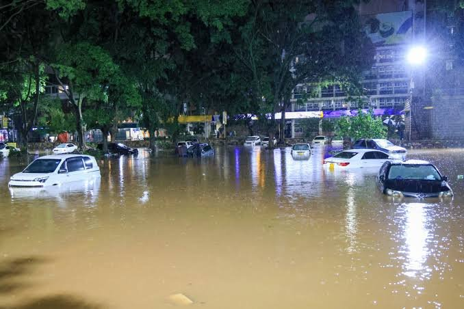

El Niño's Global Impact: Kenya and the United States Face Growing Flood Risks as Extreme Rains Intensify
News
As devastating floods hit parts of the United States, Kenya is also experiencing the risks of unusually heavy seasonal rainfall, raising questions about how prepared governments are for increasingly unpredictable weather.
The United States and Kenya are facing growing challenges from heavy rainfall as the 2026–2027 El Niño climate pattern influences weather conditions across different parts of the world.
In Florida, intense rainfall has triggered widespread flooding, with some areas receiving more than two feet of rain within 48 hours. Brevard County has reported numerous water rescues, while the St. Johns River has reached record levels. Other parts of the southeastern United States are also facing concerns over additional rainfall and possible flooding.
The situation has raised questions about whether the country was adequately prepared for the extreme weather conditions. The National Oceanic and Atmospheric Administration (NOAA) had already warned in its October seasonal outlook that parts of the southern and eastern United States could experience above-average precipitation during the coming months.
Meanwhile, Kenya is also preparing for the effects of El Niño during the October–December 2026 rainy season. Meteorological forecasts have warned of above-average rainfall in several regions, increasing the possibility of flash floods, river overflows, displacement and damage to infrastructure.
The contrast between the two countries highlights how a single global climate phenomenon can produce serious weather disruptions across different continents. While El Niño is associated with increased rainfall in parts of East Africa and the southern United States, its effects vary depending on regional weather patterns.
However, El Niño alone does not explain every flooding event. Local weather systems, poor drainage, land use and already saturated soils can significantly worsen the consequences of heavy rainfall.
For both countries, the challenge extends beyond predicting the weather. Effective early-warning systems, proper drainage infrastructure, emergency response planning and public awareness are essential in reducing the human and economic costs of flooding.
As the rainy season progresses, the unfolding situation in Florida and the preparations underway in Kenya offer an important reminder: knowing extreme weather is coming is only the first step; ensuring communities are prepared is what ultimately saves lives.